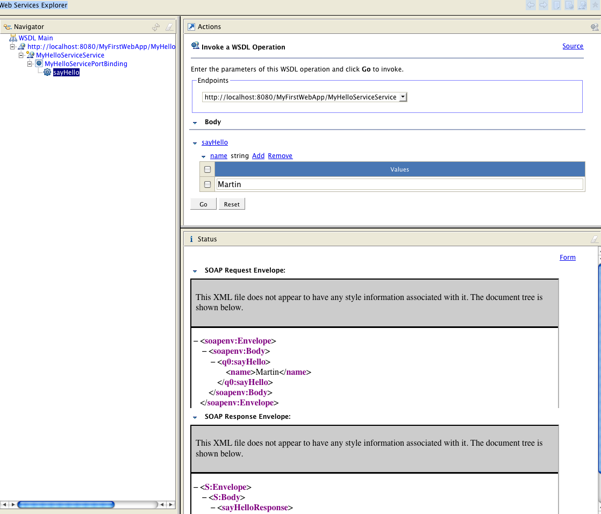
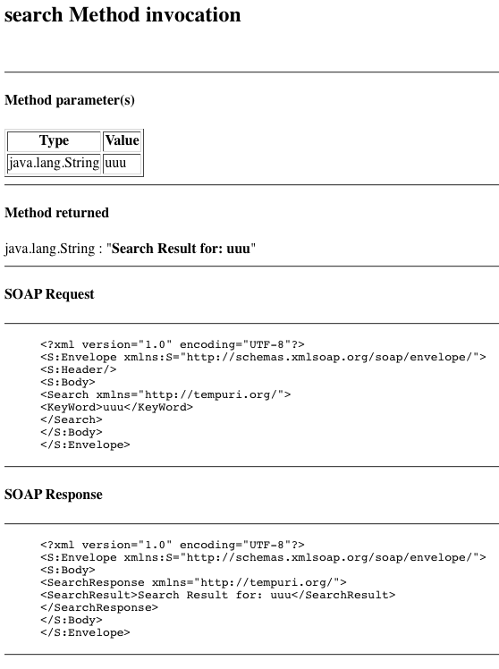
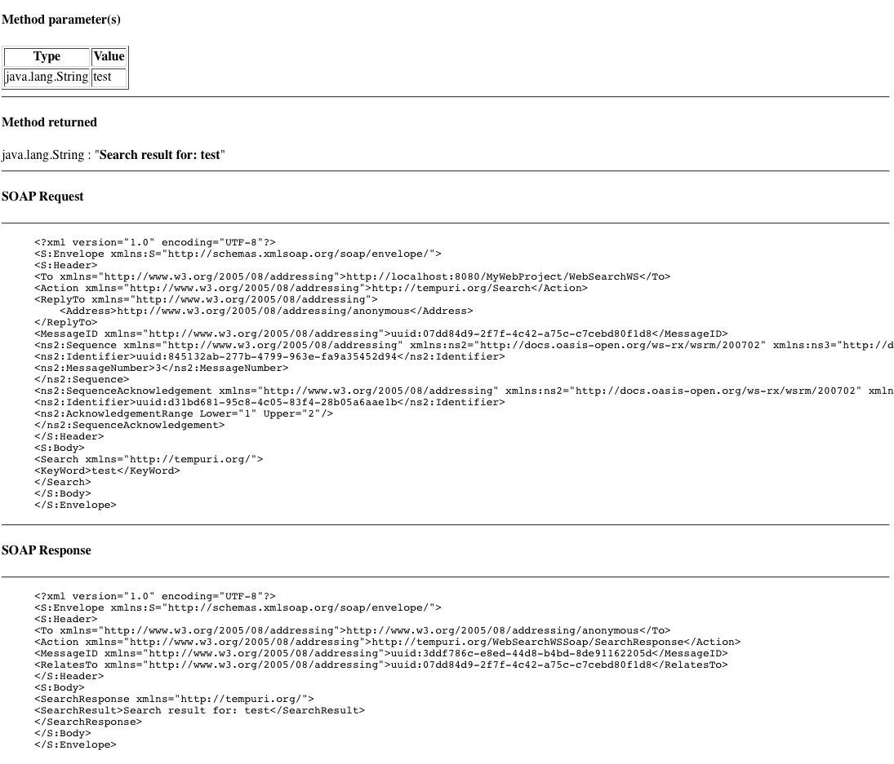

Metro is a high-performance, extensible, easy-to-use Web Service
stack that is a part of GlassFish Server community. It offers core
support for JAX-WS and optionally support for additional features.
The GlassFish Tools Bundle for Eclipse 1.1 version includes Metro
plug-in for Eclipse.
This section of the document will help you get familiar with
developing web services applications with Metro using the Tools
Bundle.
Before you can start developing web application with Metro for
GlassFish Server, you need to ensure Metro is installed on GlassFish
Server.
While GlassFish v2.1 includes Metro, GlassFish v3 Prelude does not
include the Metro stack by default. You can install it as an Add-On
package.
You can also update Metro version included with GlassFish Server
v2 as described in the following document:
Metro is available as an Add-On package from Update Center for
GlassFish v3 Prelude. The following task describes the process of
adding Metro stack to GlassFish v3 Prelude.
The following task describes the steps to create a web application
and add a web service to it.
Create a new web application as
described in To create a new Web
Application project for GlassFish Server.
From Project Explorer,
right-click the web application project node and select New->Class
In the New Java Class wizard,
select mypkg as package name, and
MyHelloService as class name.
Click Finish.
In the Eclipse IDE, edit the java class file and enter the
following code snippet to create a method:
package pkg;
public class MyHelloService {
public String sayhello(String name) {
return "Hello " + name;
}
}
From the Project Explorer,
select MyHelloService java class.
Right-click the java class and
select WebServices->Create Web Service.
In the Service section, move
the Service slider one level up to the top, to enable Test
Service stage.
Click Web Service runtime
entry.
Select METRO Runtime in the
dialog box.
Click OK to close the dialog
box.
Click Next.
Options screen is displayed. You can customize your options for:
The default options are set based on your target runtime
platform.
Click Next.
Start the Server if necessary,
depending on the state of Server.
Enter your GlassFish Server
admin login and password if requested.
Click Launch, when presented with option to launch Web
Service testing facility.
Browser opens page where you can test the web service.
Click Finish to complete the wizard.
At this stage a web service has been created and deployed on the
server.
Click sayHello
link in the web page, and then click Add to add the parameter
value.
Enter your name in the text
field and click Go.
The service will respond with
Hello $YOUR_NAME message.
Click Source link to see the SOAP communication.
The result shall look like this:

Download this WSDL
file and save it in a suitable location.
Right-click the Web Project
created in the previous task, in Project Explorer and select
New->Other...
Browse the Web Services
category and select Web Service from Menu.
Select Top down Java
bean Web Service and click Browse... to choose the WSDL
file.
Click OK to close the dialog
box
Enter the direct file link to your WSDL file from the web
browser as follows:
file:///Users/admin/work/sources/eclipse/metro/docs/SearchWS.wsdl.
Click Web Service runtime
option and select METRO Runtime from the dialog box.
Click OK.
Click Next.
Accept the default options and
click Next.
Start the Server if necessary,
depending on the state of Server.
Enter your GlassFish Server
admin login and password if requested.
Click Finish to close the wizard.
The Web Service is created, but deployment to server fails,
because implementation of the service is missing.
Click the error message
(light-bulb icon) next to the compilation error, and choose Add
Unimplemented Methods.
Implement the service method. An example Service method
source is as follows:
package org.tempuri;
import javax.jws.*;
@WebService(wsdlLocation = "WEB-INF/wsdl/SearchWS.wsdl",
serviceName = "WebSearchWS",
portName = "WebSearchWSSoap",
endpointInterface = "org.tempuri.WebSearchWSSoap")
public class WebSearchWSSoapImpl implements org.tempuri.WebSearchWSSoap {
public String search(String keyWord) {
return "Search Result for: " + keyWord;
}
}
Right-click the web project
node, and select Run As ->Run On Server to deploy the
application.
Visit the web service URL from browser.
For example:
http://localhost:8080/MyFirstWebApp/WebSearchWS?Tester
Input a search string and click Search.
The result shall look like this:

Browse the WSDL of the web
service, in the project you created in the previous task.
Right-click it and select Web Services->WS-Policy
Configuration.
WS-Policy configuration dialog box is opened.
Click the Reliable Message
Delivery checkbox and click OK to save the value and close the
dialog box.
Deploy the project again (Run
As->Run On Server)
Visit the service URL.
For example:
http://localhost:8080/MyFirstWebApp/WebSearchWS?Tester
Click the WSDL link to see the WSDL of the service.
Scroll down to see the policy definition:

Get back to the Tester page in browser, input a search
string in the search box and click Search.
Notice the change in the soap communication:
